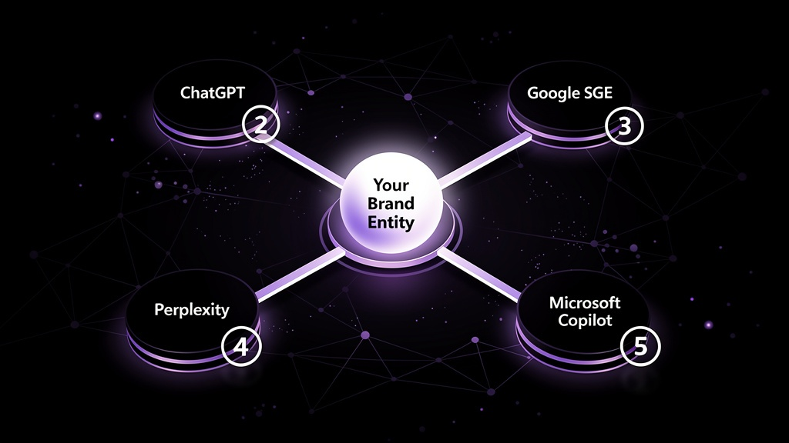
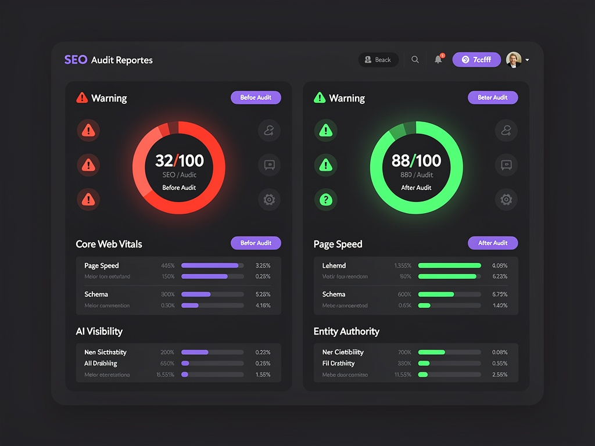
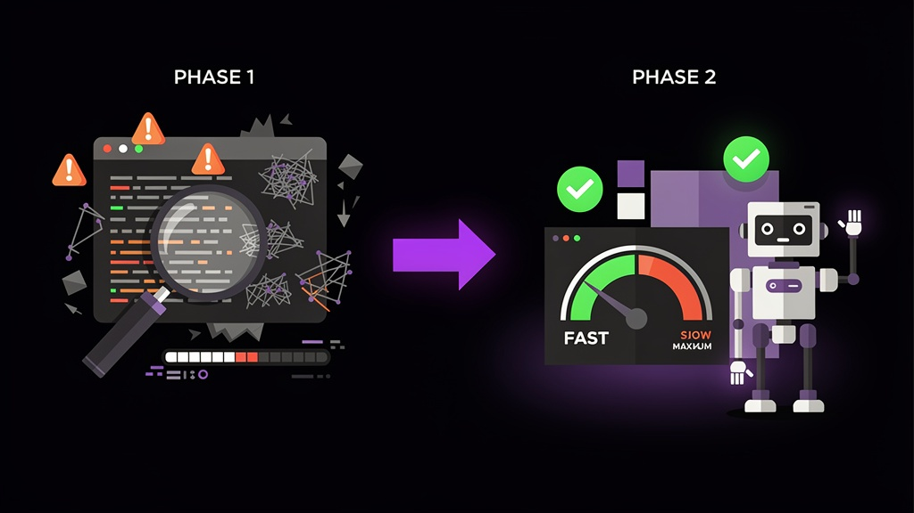
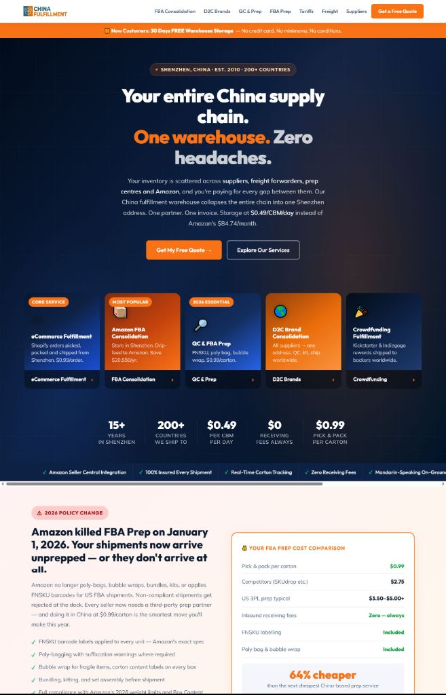

大多数品牌仍在优化那十条蓝色链接。我们则致力于将您打造为被 AI 直接引用、主动总结、优先推荐的权威来源——全面覆盖 ChatGPT、Deepseek、百度文心、Google SGE、Perplexity，以及所有正在重塑买家发现品牌方式的 AI 问答引擎。
ChatGPT、Deepseek、百度文心、Google AI 概览……这些 AI 问答引擎已不再单纯对网页进行排名。它们会主动筛选信息源、合成答案，并点名引用品牌。若您的品牌不在这一引用池内，对于那些日益增多、从不点击传统搜索结果的高意向买家而言，您的品牌即是隐形。
这并非未来问题——它正在当下发生。而绝大多数品牌的 GEO 存在感为零。建立可防御的 AI 权威地位的窗口期有限，不会永远敞开。

AI 引擎通过"实体"理解世界——品牌、人物、地点、概念。我们致力于将您的品牌打造为知识图谱中定义清晰、被广泛引用的权威实体，使 AI 模型精确识别您的身份、业务及可信度。
AI 模型偏好结构清晰、权威可信的内容。我们重构您的站点，使每一页面均采用"AI 检索语言"：清晰的语义 HTML、Schema 标记、FAQ 结构，以及可供大型语言模型逐字引用的事实性陈述。
在 AI 输出中被引用的前提，是在全网范围内被广泛引用——权威媒体、行业论坛、垂直数据库、合作伙伴网站。我们构建站外引用生态，向 AI 引擎传递明确信号：您的品牌是所在领域的权威来源。
速度缓慢、技术架构混乱的网站，无法积累 AI 权威——此为铁律。Core Web Vitals、可爬取性、结构化数据、页面加载速度，是每项 GEO 战略不可妥协的基石。
我们不会将 GEO 策略搭建于破损的地基之上。我们先行彻底审计，再以精准的方式重建——使每一层级均产生复利效应。
我们从技术、结构、竞争三个维度，对您当前的 SEO 与 GEO 表现进行全面审计——精准定位阻碍您获得 AI 引用与传统搜索排名的根本问题。

我们不只给您一张地图——我们亲自上路。每一项修复、每一次架构重建、每一篇 AI 优化内容、每一个引用布局，全部由我们执行到底。您只需一次需求沟通，我们持续深耕落地。

货运代理与仓储履约服务
China Fulfillment 的业务实力扎实，但网络存在感在技术层面千疮百孔。其网站在 PageSpeed 与 SEO 综合评分中仅获 32/100：加载缓慢、缺乏结构化数据、内容架构单薄，且无任何 AI 引用记录——在一个高意向、快速增长的关键词类目中，对所有 AI 引擎而言均为隐形状态。

GEO 权威是一种长期资产。我们寻找真正理解这一点的合作伙伴——那些想要构建一套无需日日投广告预算、也能持续运转的增长引擎的品牌。
我们深入了解您的品牌、市场、竞争格局与当前自然流量现状，并为您提供清晰的项目范围、时间节点与交付物清单。
技术爬取、AI 引用图谱绘制、实体分析、内容评估、竞品差距研究——每项发现均完成评分、优先级排列与文档记录。
您收到完整审计报告和 90 天行动路线图。仅需审计的客户在此阶段完成——拿到清晰计划交给自己团队执行，或随时回来启动阶段二。
执行每一项关键修复：Core Web Vitals、Schema、可爬取性、站点架构与结构化数据——全部重建、测试并验证通过。
AI 优化内容持续发布，实体信号在全网扩展布局，引用网络逐步建立——月复一月，您的品牌 AI 引用版图持续扩大。
第六个月起，复利效应开始显现——AI 引用频次持续增加，自然流量恢复并增长，形成竞争对手短期内难以复制的可防御权威位置。
GEO 是一种优化品牌与内容的实践，旨在让您出现在 AI 生成的答案中，并被其引用。传统 SEO 的目标是 Google 的十条排名链接，而 GEO 的目标则是出现在这些链接之上的 AI 合成答案（以及 ChatGPT、Deepseek 等独立 AI 工具）。它涉及实体权威建设、结构化数据、AI 可读内容架构，以及向 AI 模型传递明确信号的引用网络——使其识别您的品牌为所在领域的权威来源。
完全可以。GEO 权威审计是一项完全独立的服务。您将收到完整的技术与 GEO 审计、AI 引用分析、实体评估，以及优先级行动路线图——之后您可以交给自己的团队执行。许多客户先从审计入手，全面了解自己的定位，待时机成熟后再回来启动阶段二加速推进。
技术修复（Core Web Vitals、Schema、页面速度）在实施后 4–8 周内即可改善相关信号。GEO 引用（即在 AI 引擎中被提及）通常会随着实体权威与内容版图的建立，在 3–4 个月后开始显现。有意义的、可复利的 AI 引用存在感一般需要 6 个月。与付费广告不同，这是一种复利资产——它持续增长，无需持续的预算投入。
不会——GEO 是对传统 SEO 的延伸和升级。传统搜索排名与 AI 引用并不互斥；事实上，扎实的技术 SEO 基础是有效 GEO 的前提条件。我们构建的是双重用途的基础设施：既在传统搜索中排名，又在 AI 生成的答案中被引用。两者的信号互相强化。在 2026 年及以后胜出的品牌，是那些同时掌控两个渠道的品牌。
我们的审计与优化覆盖五大主流 AI 问答引擎：ChatGPT（含网页浏览与购物模式）、Google SGE / AI 概览、Perplexity AI、Deepseek 及 Microsoft Copilot。我们的实体与内容策略与模型无关——让 ChatGPT 引用您的同一套权威信号，同样适用于每一个爬取和索引网络的大型语言模型。
审计阶段无需。我们可以通过前端结合 Screaming Frog、Ahrefs、PageSpeed Insights 等工具完成大部分分析。建设阶段则需要适当的 CMS 访问权限（Shopify、WordPress、Webflow 等），以便实施技术修复和 Schema 部署。我们熟悉所有主流平台，并有清晰的权限交接流程。
我们会在通话中直接审查您当前的 AI 可见性——没有幻灯片，没有销售话术。只是清晰地呈现您的现状，以及需要做什么才能被 AI 引用。全程 30 分钟。